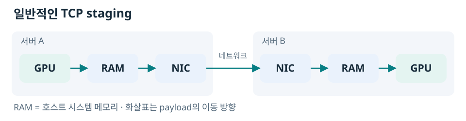
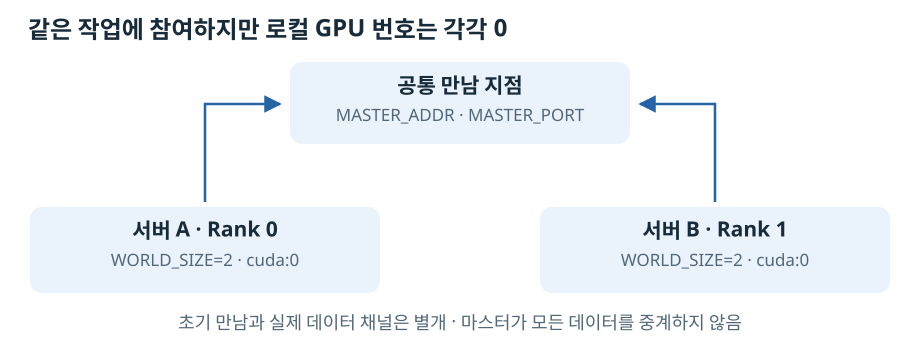
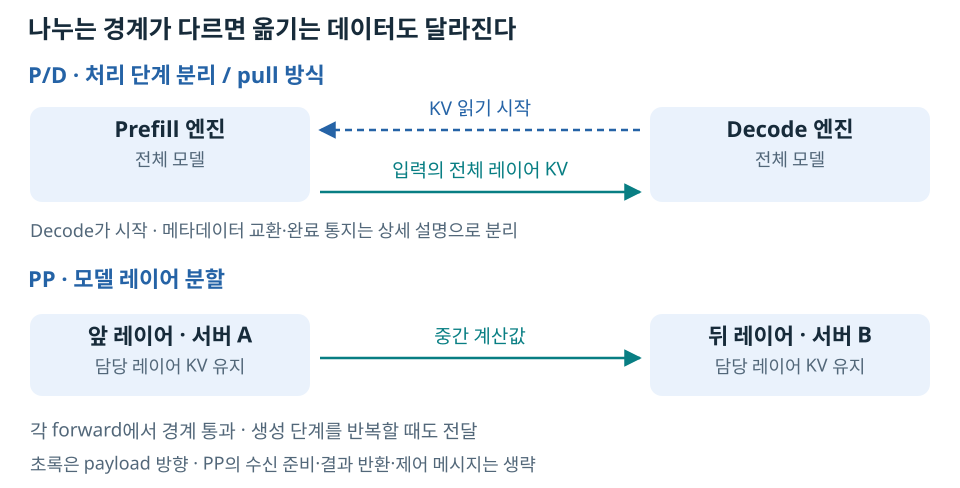

GPU 두 장이 같은 서버에 있다면 PCIe나 NVLink 같은 로컬 연결로 데이터를 주고받을 수 있다. 그런데 한 장은 서버 A에, 다른 한 장은 서버 B에 있다면 어떨까? 두 GPU 사이에는 이제 네트워크가 놓인다.
계산을 나눈다는 아이디어는 같아도 데이터를 전달하는 조건은 달라진다. 상대 서버를 찾아야 하고, 필요한 메모리에 접근할 방법을 마련해야 한다. 데이터를 옮기는 동안 계산이 기다릴 수도 있으며, 상대 프로세스가 사라지면 연결뿐 아니라 실행 상태도 다시 생각해야 한다.
서버 간 GPU 협업은 이 경계를 하나씩 넘는 과정이다. 작은 텐서를 주고받는 데서 출발해 실제 모델의 KV Cache와 중간 계산값을 옮겨 보면, 연결·전송·모델 실행이 어떻게 맞물리는지 드러난다.
1. 서버 밖으로 나가는 데이터는 어떤 길을 지날까?
같은 서버의 GPU끼리 통신할 때는 GPU 간 연결을 살펴봤다면, 서로 다른 서버에서는 네트워크 장치인 NIC와 서버 사이의 망까지 봐야 한다.
GPU 데이터를 일반적인 TCP 경로로 옮기는 모습을 단순화하면 다음과 같다.

여기서 호스트 RAM은 CPU 쪽 시스템 메모리다. GPU의 데이터를 잠시 받아 네트워크로 보내고, 반대편에서도 받은 데이터를 GPU로 옮긴다.
RDMA는 등록된 원격 메모리에 접근하는 방식이다. 대상이 호스트 RAM일 수도 있으므로 RDMA라고 무조건 RAM을 건너뛰는 것은 아니다. GPU 메모리와 NIC가 직접 데이터를 주고받는 GPUDirect RDMA까지 구분해야 한다.
이 차이가 서버 간 데이터 이동 경로의 출발점이다. NCCL·NIXL·UCX라는 이름은 이 경로를 이용하는 소프트웨어의 이름이지, 특정 물리 경로를 보장하는 표시가 아니다. 라이브러리의 역할과 로그로 실제 경로를 확인하는 방법은 따로 구분할 필요가 있다.
2. 길이 있다고 상대 메모리를 바로 읽을 수 있을까?
서버 B가 A의 주소를 안다고 A의 GPU 메모리를 마음대로 읽을 수 있는 것은 아니다. 어떤 메모리가 전송 대상으로 준비됐는지, 필요한 데이터가 그중 어디에 있는지 알아야 한다.
여기서 사용하는 NIXL pull 방식에서는 양쪽 엔진이 버퍼를 준비하고, 받는 Decode 엔진이 먼저 제공 측에 접근 메타데이터를 요청한다. 응답을 등록한 뒤에는 Decode가 필요한 KV 범위의 읽기를 시작한다. RDMA 경로라면 등록된 영역에 접근하는 rkey 같은 정보도 이 아래 계층에서 다뤄진다.

읽기를 시작하는 방향은 Decode → Prefill, 실제 KV가 이동하는 방향은 Prefill → Decode다. 이미 확보한 유효한 엔진 접근 정보는 재사용할 수 있으므로 매 요청마다 handshake를 반복하는 것은 아니다.
vLLM의 요청에 보이는 엔진 ID와 블록 ID는 이 과정의 논리적인 표지다. 블록 번호 자체가 GPU 메모리 주소나 rkey인 것은 아니다. Connector와 전송 라이브러리가 그 번호를 실제 전송할 메모리 영역에 연결한다.
상대 메모리를 찾아 읽는 과정을 이해하면 “키는 누가 만들고 Decode는 어떻게 받는가?”도 연결된다. 다만 메모리 접근 정보와 사용자 인증은 다르다. 내부 통신 포트를 누가 사용할 수 있는지는 별도의 보안 경계다.
3. 실제 서버 두 대를 하나의 통신에 참여시킨다
NCCL로 두 GPU의 값을 합산하려면 두 프로세스가 어디에서 만나고, 어떤 작업에 함께 참여할지 정해야 한다. PyTorch 분산 통신에서는 공통 주소·포트와 전체 참가자 수를 맞추고, 각 프로세스에 서로 다른 Rank를 준다. 이것은 NCCL 통신 그룹의 연결 방식이며, 앞의 NIXL pull이 반드시 같은 Rank 그룹을 요구한다는 뜻은 아니다.

B의 Rank가 1이어도 사용하는 GPU는 B에서 보이는 0번이다. Rank는 그룹 안의 프로세스 번호이지 모든 서버를 통틀어 붙인 GPU 장치 번호가 아니다.
설정값이 출력됐다는 것만으로 통신이 성공한 것은 아니다. A의 GPU에 1, B의 GPU에 2를 두고 AllReduce SUM을 실행해 양쪽에서 모두 3이 나오는지 확인해야 실제 값이 교환됐다고 말할 수 있다.
이 검증은 서로 다른 물리 서버의 A40 한 장씩으로 수행했다. 실제 관측 경로는 NCCL Socket·UCX TCP였고, RDMA 성능을 측정한 것은 아니다. 주소·Rank·통신 그룹에 코드와 검증 결과를, RunPod 네트워크에 배포 조건을 분리해 두었다.
4. 값은 전달됐다. 그렇다면 얼마나 기다렸을까?
전송이 느릴 때 바로 GPU 메모리를 의심하면 원인을 놓칠 수 있다. GPU 데이터를 읽고 쓰는 속도 이전에 서버 사이의 네트워크가 제한일 수 있기 때문이다.
먼저 CPU 메모리 사이에서 TCP 전송을 측정하고, 그다음 GPU 데이터를 옮긴 결과와 비교했다. 큰 CPU 전송은 약 12 MB/s였고, GPU의 8 MiB 데이터를 보내고 돌려받는 왕복은 약 1.30초였다. 왕복 데이터량으로 계산한 유효 속도는 약 12.93 MB/s였다.
두 값이 비슷한 수준이라는 사실은 GPU 전송이 느리다는 결과를 GPU 자체의 메모리 성능으로 단정하면 안 된다는 근거가 된다. 다만 측정 경계가 다르므로 시간을 단순히 빼서 GPU 복사 비용을 분리한 것은 아니다.
전송 비용 측정에서는 CPU의 데이터 전송＋ACK와 GPU의 전체 데이터 왕복을 구분한다. 왕복 측정은 통신 비용을 보기 위한 방법이지, 실제 모델이 언제나 보낸 텐서 전체를 되돌려 받는다는 뜻은 아니다.
5. 모델에서는 무엇을 옮겨야 다음 계산을 할 수 있을까?
작은 텐서의 이동을 확인했다면, 다음 질문은 실제 모델이 어떤 데이터를 필요로 하느냐다.
LLM의 Prefill은 입력 토큰을 처리하고, Decode는 새 토큰을 반복해서 생성한다. 이때 과거 토큰의 K·V 계산 결과를 저장해 재사용하는 것이 KV Cache다. 반면 Transformer 레이어 사이에는 다음 레이어가 계산할 중간 벡터가 전달된다.
따라서 모델을 나누는 위치에 따라 옮기는 데이터도 달라진다.

P/D는 처리 단계를 인계하고, PP는 모델 계산의 중간을 인계한다. PP의 각 서버는 자기 레이어의 KV를 관리하며, 생성 중에도 레이어 경계를 반복해서 통과한다.
실제 입력 673토큰·출력 32토큰·동시 요청 1개에서는 P/D가 KV 96.75 MiB를 옮기는 데 평균 8.43초가 걸렸다. 전체 요청 시간은 한 서버 약 1.05초, P/D 약 9.57초, PP 약 1.97초였다.
이는 특정 TCP 환경의 결과이지 PP가 항상 P/D보다 빠르다는 순위가 아니다. 같은 두 GPU와 같은 네트워크라도 무엇을 얼마나 자주 보내는지가 다르면 비용이 달라진다. 모델 실행 구조 아래에서 P/D 흐름, PP의 실제 텐서, 성능 결과를 각각 살펴볼 수 있다.
6. 기다리던 상대가 사라지면 무엇을 복구해야 할까?
통신이 잠시 늦는 상황과 상대 프로세스가 종료된 상황은 다르다. 새 프로세스가 같은 주소에서 실행돼도, 이전 프로세스의 GPU 메모리와 진행 중 연산이 저절로 돌아오지는 않는다.
작은 NCCL 그룹에서 B를 종료하자 A의 후속 통신도 실패했다. 이후 양쪽을 새 프로세스·새 그룹으로 실행했을 때 다시 합산에 성공했다. 확인한 것은 새 그룹으로 통신을 재구성할 수 있다는 것이지, 중단된 연산이 자동으로 이어진다는 것이 아니다.
TP·PP는 여러 워커가 하나의 모델 계산에 참여한다. P/D는 독립 엔진 사이에 KV를 인계한다. 이 차이 때문에 복구할 범위도 달라진다. P/D라고 해도 아직 받지 못한 KV가 사라졌다면 Prefill을 다시 수행해야 할 수 있다.
장애와 복구에서 연결 복구, 통신 그룹 재생성, 요청 재시도를 구분한다.
7. 요청이 계속 들어오면 어디에서 밀릴까?
한 요청의 전송이 가능하다고 지속적인 요청도 감당할 수 있는 것은 아니다. 예를 들어 요청마다 약 101 MB의 KV를 보내고 초당 한 요청이 들어온다면, 공유 전송 구간에는 초당 약 101 MB의 데이터가 새로 생긴다. 그 구간의 처리 능력이 약 12 MB/s라면 대기는 계속 쌓인다.
여러 요청의 계산을 겹치는 것도 이 전송량 자체를 없애지는 못한다. PP에서는 앞 단계가 요청 B를 처리하는 동안 뒤 단계가 요청 A를 처리할 수 있지만, 같은 요청의 뒤 단계는 앞 단계 결과를 기다려야 한다.
결국 “서버를 더 붙이자”보다 먼저 어떤 문제를 해결하려고 나누는가를 정해야 한다. 모델을 메모리에 넣으려는지, 요청 처리량을 늘리려는지, Prefill과 Decode의 간섭을 줄이려는지에 따라 선택이 달라진다.
부하·대기열과 구성 선택은 이 질문으로 이어진다. 여기서의 대기열 설명은 측정한 전송 비용을 바탕으로 한 해석이며, 높은 부하에서 모든 구성의 용량을 검증한 결과는 아니다.
서버를 나눈다는 것은 계산과 상태의 경계를 정하는 일이다
서버 간 GPU 통신을 이해한다는 것은 TCP나 RDMA라는 이름을 외우는 데서 끝나지 않는다. 데이터가 지나가는 경로, 그 데이터를 기다리는 계산, 실패했을 때 다시 만들어야 하는 상태를 함께 보는 것이다.
전송 라이브러리는 데이터를 옮긴다. 모델 런타임은 어떤 계산을 나눌지 정한다. 요청 조정 계층은 요청을 배정하고 재시도를 관리한다. 접근 통제는 그 통신을 사용할 수 있는 상대를 제한한다. 이 역할을 구분해야 느린 이유와 실패한 범위를 좁힐 수 있다.
문서 트리
아래는 디렉터리 나열이 아니라 본문의 질문에 따른 관계다. 세부 측정표와 구현 설명은 해당 질문 아래에 놓았다.